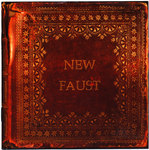

| Artist: | Little Tragedies |
| Title: | New Faust |
| Label: | Mals Mals 114/115 |
| Length(s): | 53/58 minutes |
| Year(s) of release: | 2006 |
| Month of review: | [07/2008] |
| 1) | Epigraph | 4.06 |
| 2) | Prologue | 2.42 |
| 3) | The Prophets | 12.20 |
| 4) | I Am Tired To Be Around People | 5.40 |
| 5) | Two Demons | 28.02 |
Disc 2
| 1) | Sabbath | 3.49 |
| 2) | Margarita | 2.42 |
| 3) | Confutatis | 3.31 |
| 4) | The Passing | 13.11 |
| 5) | Cup Of Life | 6.42 |
| 6) | Anticipating Christmas | 4.50 |
| 7) | Arabesque | 1.56 |
| 8) | Eternal | 15.31 |
| 9) | Some Day You Will Remember Me | 6.04 |
As the album starts off we are treated to the standard rock opera idiom: impressive choir with a dramatic narrative across, followed by a rock guitar, kicking things off and not before long we are treated to a tapestry of keys. But, oh, there's a catch: all vocals are in Russian, so you might be able to pick up some meaning on the tone of voice, but for most of us western people the story is gonna float by in obscurity. Having said that: the music is largely instrumental, so there should not be a big problem there.
The first disc remains quite close to the normal sort of rock opera sound, with the possible exception of incidental heavier guitar, which sound like the more classically oriented metal riffs. The band say to be influenced by ELP, which can be heard in both the classical influences and the keys, without either dominating the band's sound. So, the first album is an album of symphonic prog that will serve quite well, thank you. The fact that the Russian narration and singing are kept to a minimum helps nicely along the way.
The second disc, though, goes haywire right away. We start off with some sort of fuge and from that head into longer sections of near spoken vocals. But after having flushed that out of their systems, the guys return to the order of day, being making symphonic prog. Or at least, attempt to. Sure, there still are some great, rolling symphonic moments, but the extra vocals sections, the acoustic guitars and the added key bits, which no longer insist of the type of Mark Kelly lushness (goodness me, we even hear a section of the dreaded elping organ on Eternal) we hear on the first disc all help in making this second disc a watered down version -at best- of the first one. Well, except for the bloated ending, that is. Having said all that, what I chiefly want to convey on this second disc is that it fails to meet the expectations raised by the first one.